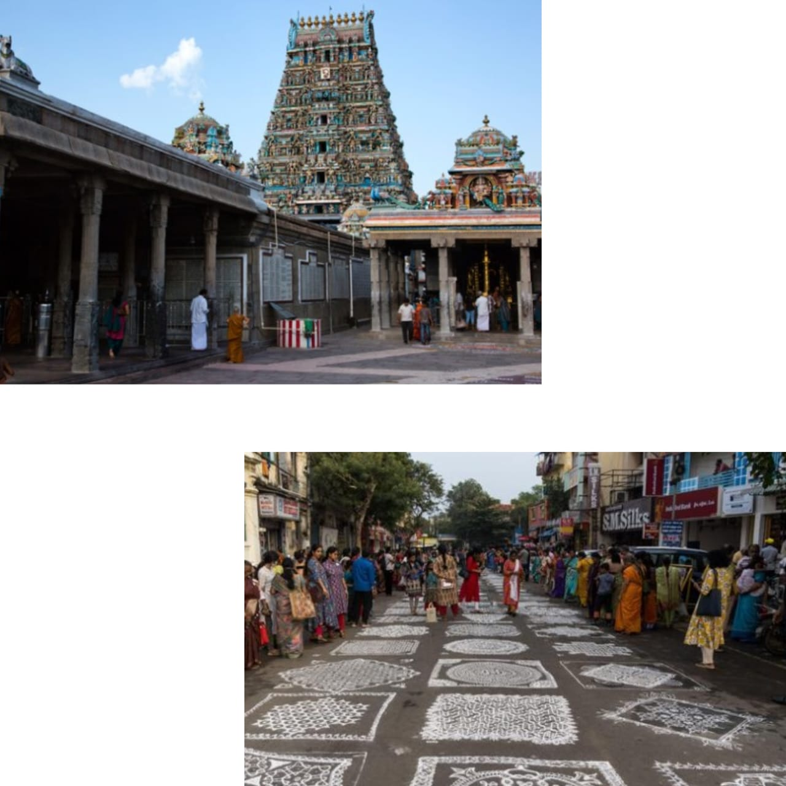

|

|
- Mylapore, one of the oldest neighborhoods in Chennai, is steeped in history, culture, and charm. Walking through its streets feels like stepping into another era, with ancient temples, vibrant markets, and traditional homes with beautiful kolams (intricate floor designs) decorating their entrances. The Kapaleeshwarar Temple, dedicated to Lord Shiva, stands as the heart of Mylapore, attracting devotees and tourists alike with its stunning Dravidian architecture and lively, spiritual atmosphere. The temple's majestic gopuram (tower) is adorned with intricate carvings, each depicting a story from Hindu mythology, creating a serene yet awe-inspiring experience.
- Beyond its spiritual landmarks, Mylapore is also known for its bustling markets and vibrant local life. The neighborhood's streets are lined with vendors selling fresh flowers, fragrant spices, and traditional South Indian items, creating a sensory feast of colors, aromas, and sounds. At dawn, you can witness residents performing morning rituals, stopping to offer prayers, and gathering to buy their daily essentials. Mylapore is also home to several iconic eateries and coffee houses where one can taste authentic South Indian filter coffee and snacks like idlis, vadas, and dosas, making it a beloved spot for food lovers who crave a taste of Chennai culinary heritage
- Moreover, Mylapore is a thriving center for the arts, especially classical music and dance. The neighborhood hosts the annual Margazhi music and dance festival, where performers from across India come to showcase traditional Carnatic music and Bharatanatyam dance. The festival venues, including small halls and open-air stages, fill with audiences who come to experience these timeless art forms. Throughout the year, Mylapore offers a slice of the rich history of Chennai and cultural legacy, blending tradition and modernity in a way that makes it an essential part of the soul of the city.
|